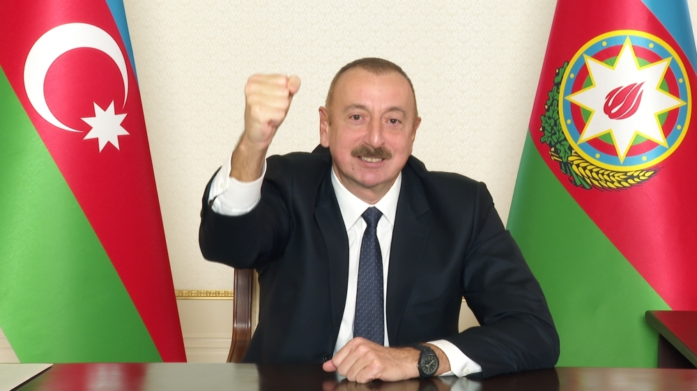
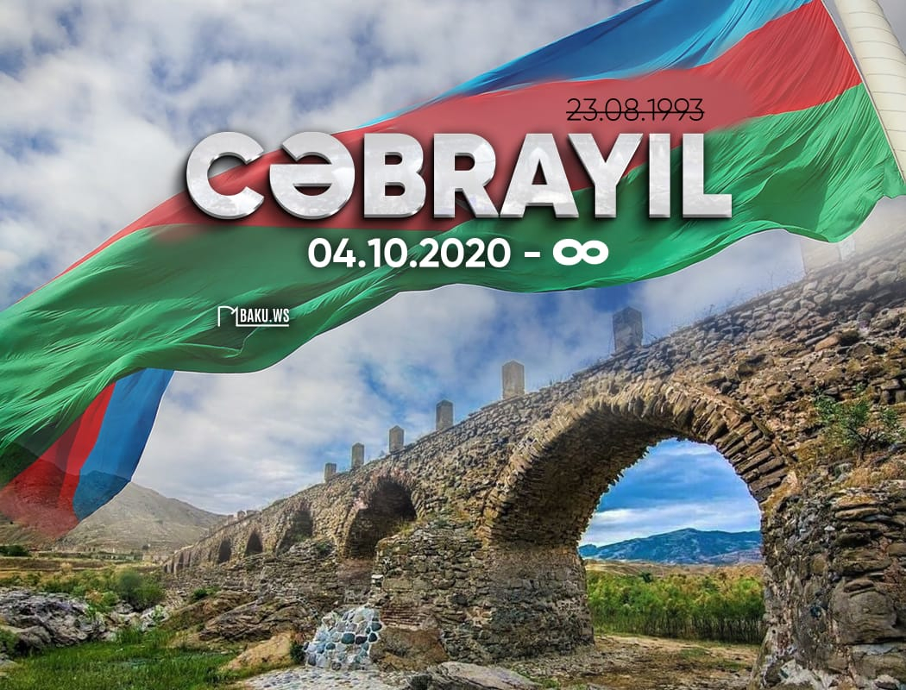
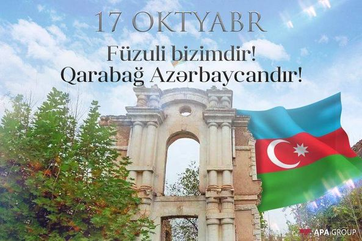
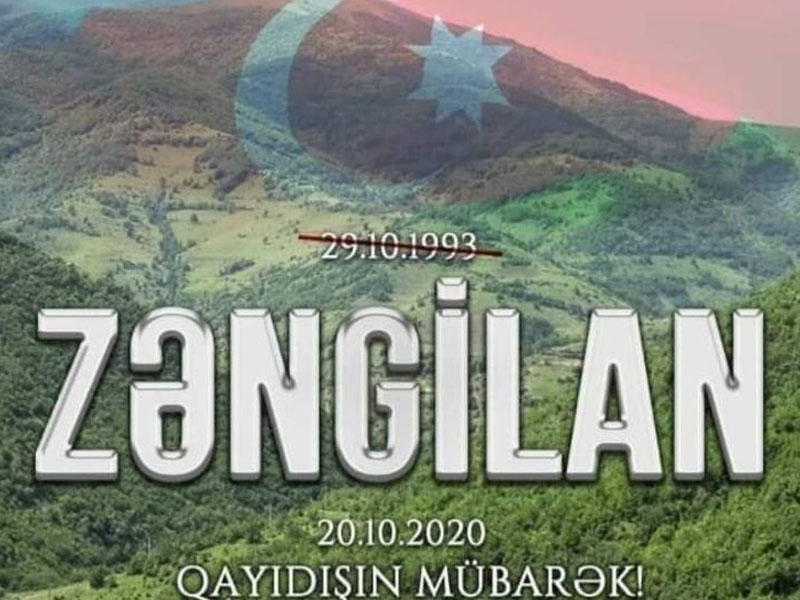
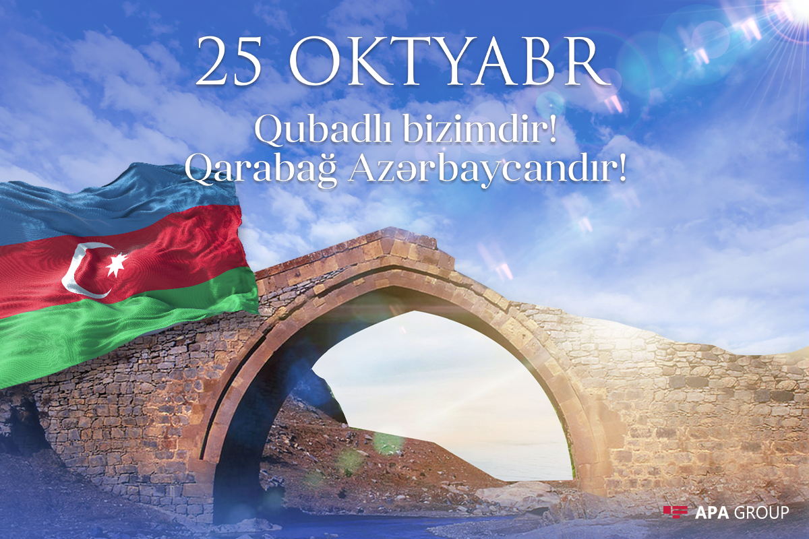
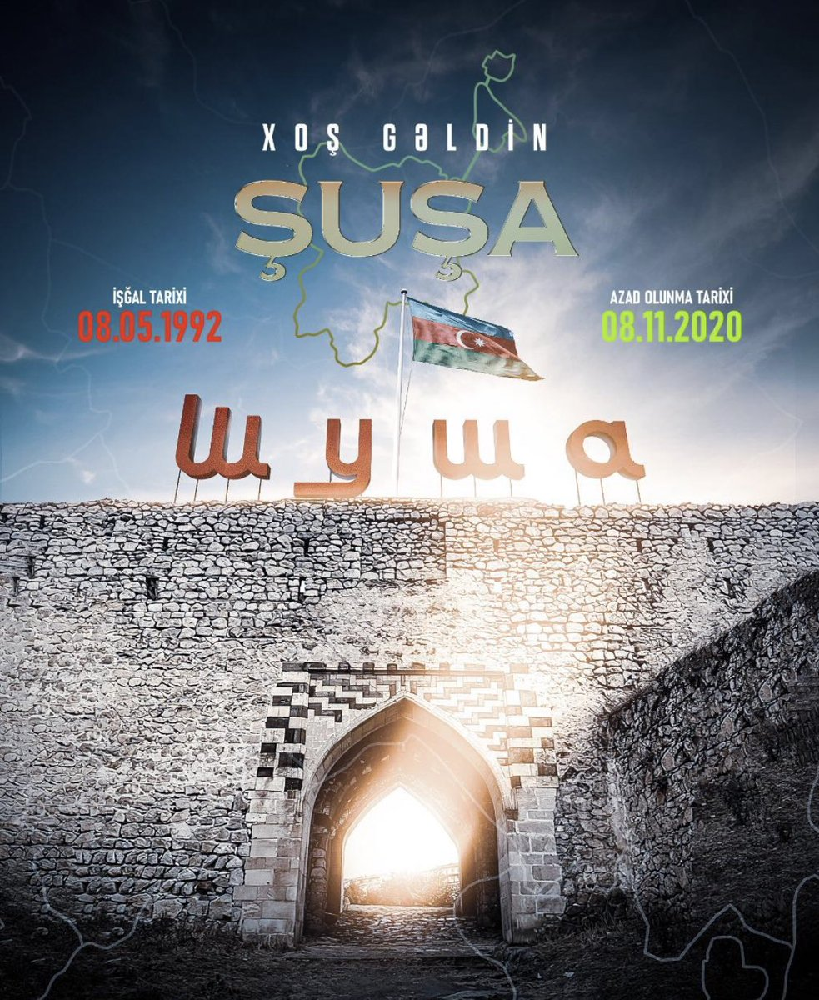
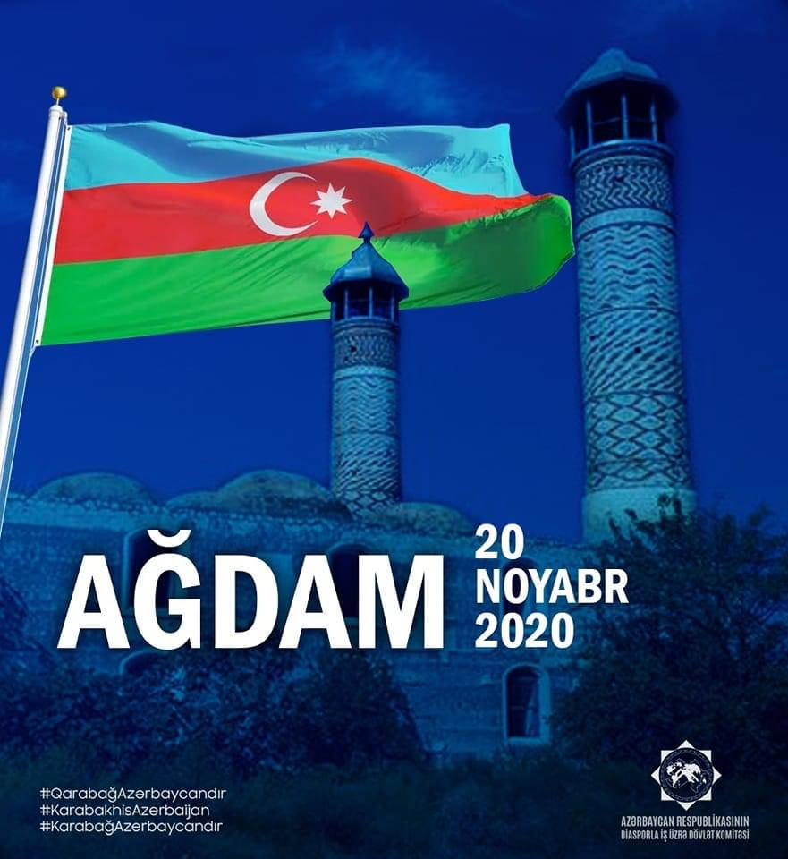
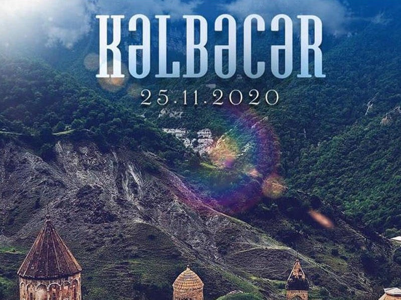
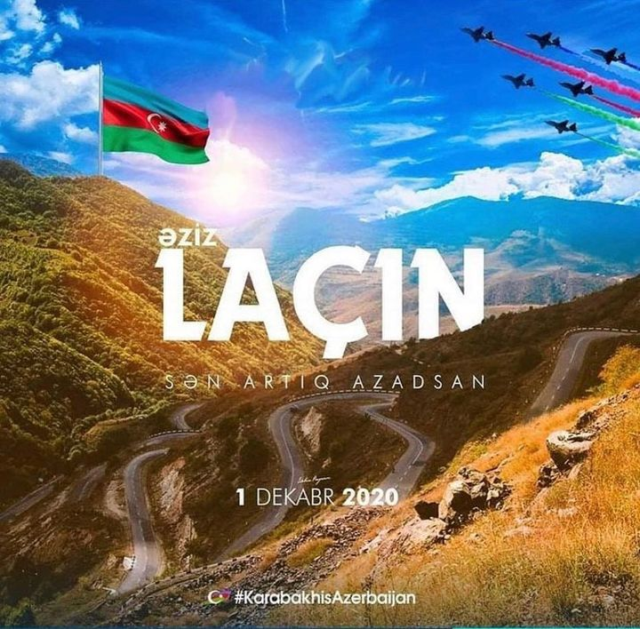

Azərbaycan Ordusunun sentyabrın 27-də Qarabağda başladığı uğurlu əks-hücum əməliyyatı
nəticəsində noyabrın 9-dək 5 şəhər, 4 qəsəbə və 286 kənd işğaldan azad edilib.
44 gün ərzində həyata keçirilən sürətli döyüş əməliyyatları ilə Cəbrayıl şəhəri
və rayonun 90 kəndi, Füzuli şəhəri və rayonun 53 kəndi, Zəngilan şəhəri, rayonun
Mincivan, Ağbənd, Bartaz qəsəbələri və 52 kəndi, Xocavənd rayonunun Hadrut qəsəbəsi
və 35 kəndi, Tərtər rayonunun 3 kəndi, Qubadlı şəhəri və rayonun 41 kəndi, Xocalı
rayonunun 9 kəndi, Şuşa şəhəri, Laçın rayonunun 3 kəndi, həmçinin Ağdərə və Murovdağ
istiqamətlərində bir neçə strateji yüksəkliyi, Zəngilanda isə Bartaz, Sığırt,
Şükürataz yüksəklikləri və daha 5 adsız yüksəklik azad olunub.
Noyabrın 10-da Azərbaycan Prezidenti, Ermənistanın Baş naziri və Rusiya Prezidenti
münaqişə zonasında atəşin və bütün hərbi əməliyyatların tam dayandırılması barədə
bəyanat imzalayıblar. Bəyanata əsasən, noyabrın 20-də Ağdam rayonu, noyabrın 25-də
Kəlbəcər rayonu, dekabrın 1-də Laçın rayonu Azərbaycana təhvil verilib. Noyabrın 10-da
hərbi əməliyyatlar dayandırıldıqdan sonra, Qarabağ ərazisindəki digər şəhər, qəsəbə və
kəndlər üzərində də Azərbaycanın suveren hüquqları tanınmış, Azərbaycan Respublikasının
ərazi bütövlüyü bərpa olunmuşdur.

Düşmən işğalından azad olunmuş şəhərlərimizin siyahısı:







